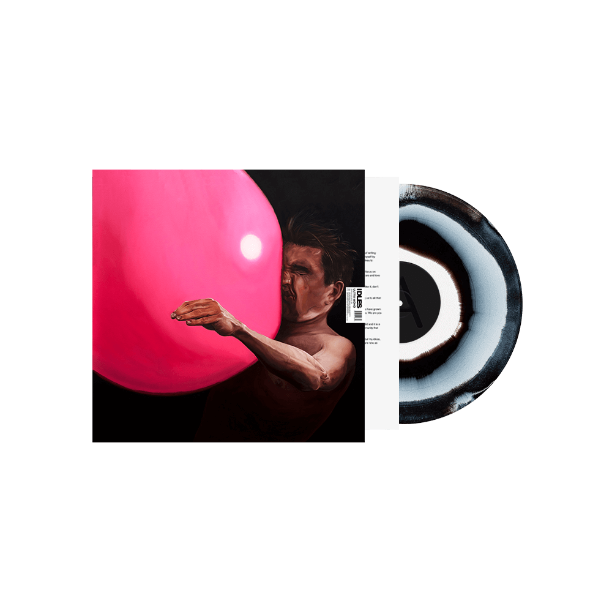
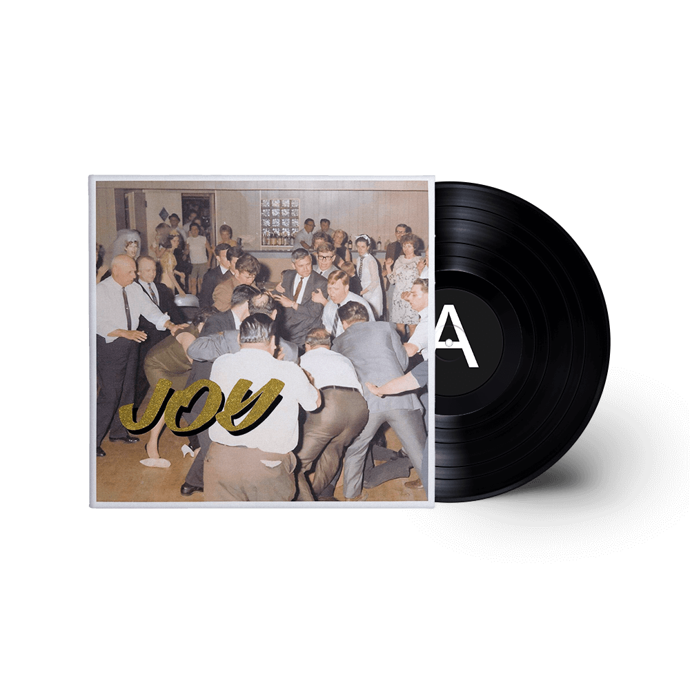
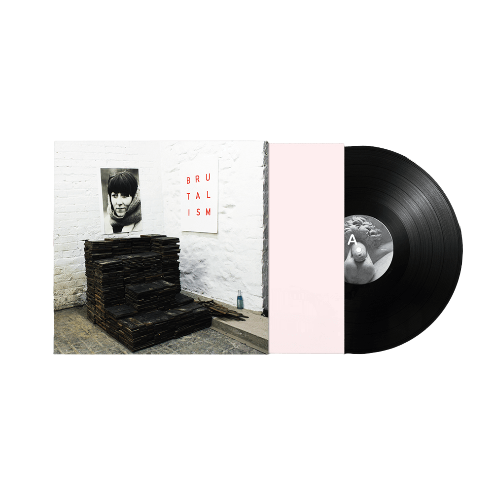
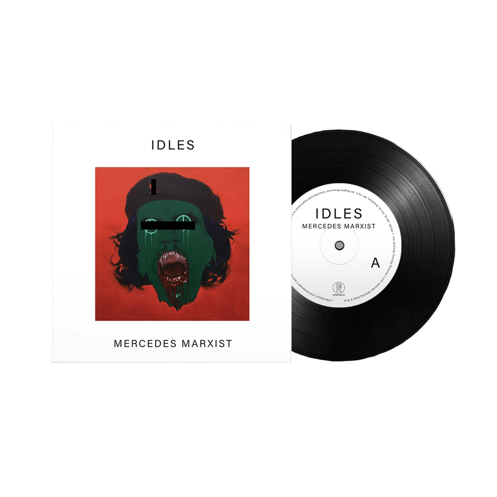
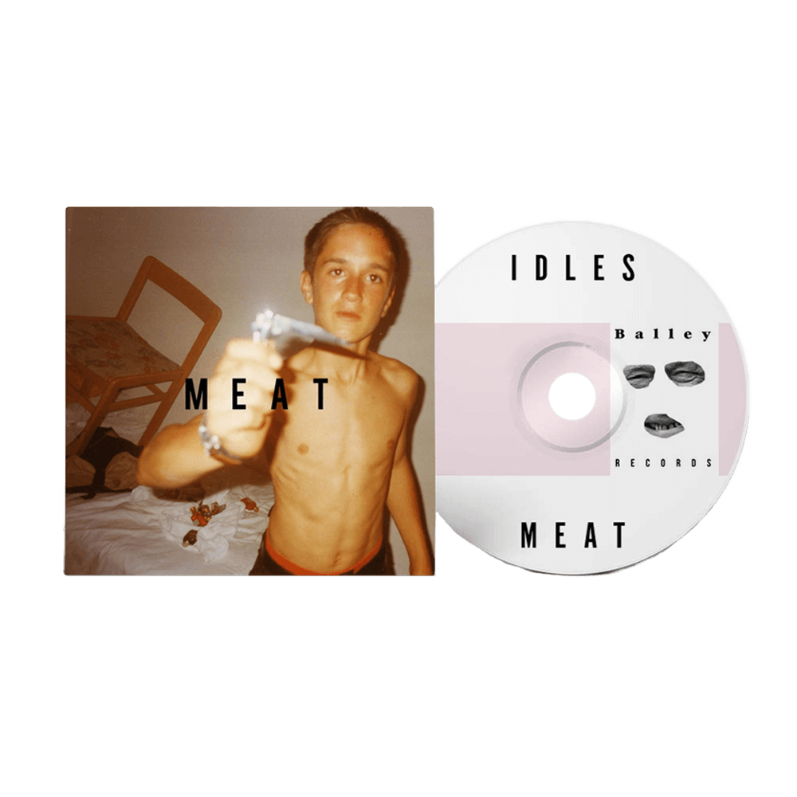

ULTRA MONO
Following Brutalism (2017) and Joy as an Act of Resistance (2018), two releases that garnered global critical acclaim, IDLES return with their highly anticipated third album – Ultra Mono. Sonically constructed to capture the feeling of a hip-hop record (including production contribution from Kenny Beats), the album doubles down on the vitriolic sneer and blunt social commentary of their past work. Not far beneath the surface of their self-admitted sloganeering lies a deeply complex and brutally relevant album that chews up clichés and spits them out as high art for the masses. This is momentary acceptance of the self. This is Ultra Mono.
Ultra Mono will be released on 25th September 2020 on Partisan Records.
A BEAUTIFUL THING: IDLES LIVE AT LE BATACLAN

A Beautiful Thing: IDLES Live at Le Bataclan is the brand new live album from IDLES, recorded at Le Bataclan in Paris on 3rd December 2018, at the close of a 90 date world tour. The album celebrates the band’s success over the last two years, featuring songs from Brutalism and Joy as an Act of Resistance, and highlights their overall message of unity, and of healing through community.
“Our show at Bataclan was the end of a very long journey for us. On that tour we learnt so much about ourselves, each other and the audiences we have grown with over the past 10 years. That show was nothing short of catharsis and nothing more than love. We love what we do and the people who have carried us here, there was no hiding that at Bataclan and we are so very grateful that the moment was captured in all its glory, love and fatigue. Long live the open minded and long live the moment.” – Joe Talbot
JOY AS AN ACT OF RESISTANCE
Joy As An Act Of Resistance is a parade. It’s a parade of laughing at the funeral, of listening to the bastards, of phlegm on the mirror. It’s a parade of my Grandfather’s wit, it is all the shit haircuts I’ve ever had. It is a parade of naivety, of a warm embrace, it is Young Thug’s dress. It’s the parade of being carried through the grim dark. It’s a parade of laughing at yourself. It is love. It is loving yourself. It is a parade of Tony Benn’s smile. It is Idles, for now. It’s the beautiful smell of immigrant food. It is a parade of vulnerability. It is Ilie Nastase It’s a parade of being at your worst. It is our best, for now. It is our thank you. It is our sorry. It is a parade without fluff but with a tonne of glitter and violence. It is a parade of what I truly miss and what I truly have. It is a parade of the second album. It is us cutting it’s fucking head off. It is a parade of joy in the face of all we don’t want and all we fear. It is a parade of you. Thank You. (Joe Talbot – IDLES)
BRUTALISM
In a time of polarised politics and murky waters; IDLES and bands like them are needed to remind people that it’s ok to dance and laugh and sing in the face of adversity. Bristol’s finest post-punk polemics IDLES have been promising to do great things for some time now, and with their debut album “Brutalism” they absolutely fulfill that promise, and a furious promise at that.
MERCEDES MARXIST
Following the release of 2018’s critically acclaimed album ‘Joy as an Act of Resistance’, IDLES are back with two new songs, pulled from the aforementioned album sessions. The Mercedes Marxist contains “Mercedes Marxist” and “I Dream Guillotine”
“Mercedes Marxist was a strange beast for us, after Rottweiler, it was the first song we wrote for Joy as an Act of Resistance. I was pissed off at what I was and where I was: I was sofa surfing on the weekends and spending the weeks looking after my mum. My life balance was way off and this song reflects just how useless I felt. It was me at my worst and without any buoyancy it became catharsis. It was the last splurge from Brutalism so we omitted it. I like it now. (Joe Talbot – IDLES)”
MEAT EP
On Meat, you can hear IDLES building the foundation of the sound we know them for today. In just 4 tracks, IDLES made Meat an EP to remember. It gave fans something to bite into before following it up with the masterpiece that is Brutalism.